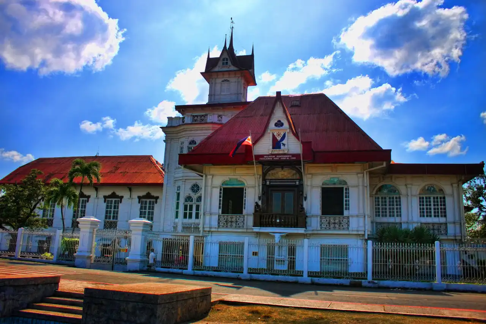

Embrace Business by the Bay
Helping your business thrive in a warm, connected community.
Why Choose Coastal Commerce?
Doing business along the coast isn’t just about location—it’s about connection. Our chamber champions local growth by fostering collaborations between entrepreneurs, creatives, and service providers. Whether you run a beachfront café, manage a tour company, or sell local crafts, we’re here to spotlight your efforts and strengthen the ties that bind our vibrant community.